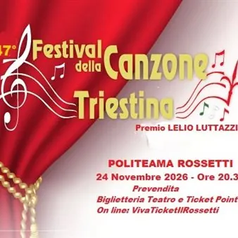

mar 24 nov · dalle 20:30
47° Festival della Canzone Triestina - Premio Lelio Luttazzi
CON LA BELLISSIMA “TRIESTE MIA” CON LELIO LUTTAZZI AL VIA L'ATTESISSIMO 47° FESTIVAL DELLA CANZONE TRIESTINA - I BRANI IN GARA Nel ricordo dell'indimenticabile LELIO – qui nostalgico interprete della bellissima TRIESTE MIA - martedì 24 novembre alle 20.30 al Politeama Rossetti…
 Indicazioni
Indicazioni
- Costi e prenotazioni
- Costo non indicato · Prenotazione non indicata
- Programma
- Programma da verificare. Apri la fonte ufficiale per orari e possibili aggiornamenti.
- In caso di maltempo
- Nessuna indicazione specifica pubblicata.
- Note
- Acquisito automaticamente dalla fonte.
L’EVENTO
Descrizione completa
CON LA BELLISSIMA “TRIESTE MIA” CON LELIO LUTTAZZI AL VIA L'ATTESISSIMO 47° FESTIVAL DELLA CANZONE TRIESTINA - I BRANI IN GARA
Nel ricordo dell'indimenticabile LELIO – qui nostalgico interprete della bellissima TRIESTE MIA - martedì 24 novembre alle 20.30 al Politeama Rossetti al via l'attesissimo 47° FESTIVAL DELLA CANZONE TRIESTINA-PREMIO LELIO LUTTAZZI. Al brano vincente verrà assegnata la speciale scultura del Mo Giorgio Del Ben, dono del Comune di Trieste per onorare il grande artista concittadino. Attrazioni saranno ANDREA BINETTI star dell'operetta e il trio MAXINO-FURIAN-SERAFINI nel loro trascinante umorismo dialettale.
Queste le splendide 15 canzoni e i partecipanti in ordine d'esecuzione: Dama bianca ad ogni luna, autrice e interprete Patrizia Haggiopulo con il Big Family Choir e la ballerina Framboise de Charme; Eviva là e po blues di Diego Millo, interpreti i Sapphire Fever; Speranza di Roberto Postogna per Diana Grillo, Laura Visentin e i Cantadei; Che bel che iera co no iera E.v.a. Di Claudio Piuca, pure interprete con i Skitaristi; La nostra vita di Andrea Rot per “Sara”; Ghe voio sempre ben di Robby Michelazzi e Walther Mucchiut per la Bic Bum Band; Muleria triestina di Stellio Capato per il coro i Gioiosi; Vardo i oci de mia mare di Sergio Blaskovic per Arianna Sossa; Viva l'amor di Renato Scognamillo per Deborah Luggeri, Sergio Ricci, il gruppo Heliantus Aps e i ballerini dell'ASD Accademia Danze Trieste; Neviga di Roberto Sterni, pure interprete con “Daniela”; Sentite con mi di Gianfranco Pacco per “Rachele”; Trieste in sax, autrice Susanna Parovel, pure interprete con Emanuele Spagnuolo e le Familyette: Viva la clanfa! Di Alessandra Baichin anche interprete con “Roby”, i Klanfausonia e i ballerini Lugherelli; Trieste te son meravigliosa di Giuseppe Fabrizio Nangano, in arte “Nanga”; Oh maledeta e belissima bora di Tamara Ivancic e Manuel Termini per i Big Five.
Posto unico in prevendita a € 12: Biglietteria del Rossetti, Ticket Point Corso Italia 9
IL PROGRAMMA
Programma e orari
Appuntamenti raccolti dalle fonti elencate. Dove manca un orario, non è ancora disponibile in questa scheda.
Programma pubblicato
- Dal 2026-11-24 al 2026-11-24
INFORMAZIONI UTILI
Prima di partire
- Controllare la fonte prima di partire.
ORGANIZZAZIONE